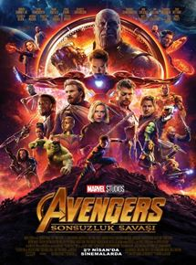

| Resim | Film Adi | Filmin Açiklamasi | |
|---|---|---|---|
| LA LA LAND |
Asiklar Sehri, yollari kesisen iki insanin hikayesini anlatiyor. Hayatlarinda yön bulmaya çalisan iki tutkulu insan Sebastian ve Mia'nin yollari, Los Angeles'ta trafigin sikisik oldugu bir gün kesisir. Her ikisi de sanat tutkunu olan bu iki insan, hayallerini gerçeklestirme yolunda düse kalka ilerlemektedir.
Sebastian gelenekseksel jazzin kolonlardan yükseldigi bir kulüp açma hayalinde, Mia ise kafesinde çalistigi film platosunda kendine uygun tüm oyunculuk seçmelerine katilarak bir rol kapma telasindadir. Bu iki insanin kalpleri birbiri için atmaya basladiginda ortaya çikan manzarayi hayat sartlari bozacak, onlari yavas yavas hayallerinden uzaklastirmaya baslayacaktir. Oscar ödüllü Whiplash’in yazari Damien Chazelle’in yazip yönettigi bu romantik müzikal, modern zamana adanmis bir Hollywood masali. |
|
|
|  | AVENGERS: SONSUZLUK SAVASI |
Avengers: Sonsuzluk Savasi, dünyanin gördügü en büyük tehdite karsi güçlerini birlestirmek zorunda olan kahramanlarin verdikleri mücadeleyi konu ediyor.
Kaptan Amerika ve Iron Man'in arasinda yasanan olaylarin ardindan bölünen kahramanlarimiz, birbirlerinden uzaklara savrulurlar. Hepsi kendi yandaslariyla dünyayi korumaya çalismaktadir. Ancak dünyanin kaderi bir kez daha tehlikeye girer. Sinirsiz bir güç kaynagi olan sonsuzluk taslarinin pesine düsen Thanos, dünyanin gördügü en büyük tehdittir. Insanligin kaderi bir kez daha, insanlik için savasmaya ant içmis kahramanlarimiz elindedir. Hiçbir süper kahramanin tek basina yenemeyecegi büyüklükteki bu tehdit için ekipler birlesmeli ve tehdide tüm güçleriyle karsi koymalidir... |
|
| BIZIM IÇIN SAMPIYON |
Sampiyon, efsane yaris ati Bold Pilot sayesinde bir araya gelen Halis Karatas ve Begüm Atman arasindaki büyük askin hikayesini konu ediyor.
Gerçek bir hikayeden uyarlanan filmde, Türk atçiliginin önemli ismi Özdemir Atman’in sahibi oldugu Bold Pilot, at yarisi ile ilgilenmeyenlerin bile sevgisini kazanan bir attir. Bold Pilot ve onun daimi jokeyi Halis Karatas, birlikte unutulmaz basarilara imza attilar. Ikilinin 1996 yili Gazi Kosusu’ndaki 2:26:22’lik rekoru hala geçilemedi. Bold Pilot'in diger bir basarisi da, Halis Karatas ve Begüm Atman’in bir araya gelmesine vesile olmasi. Ünlü jokey ve Begüm Atman arasindaki destansi askin konu edildigi filmin yönetmen koltugunda, Ahmet Katiksiz oturuyor. Senaryosunu Katiksiz ile Serkan Yörük’ün kaleme aldigi filmde ünlü jokey Halis Karatas’a Ekin Koç, Begüm Atman’a ise Farah Zeynep Abdullah hayat veriyor. Türkiye Jokey Kulübü eski baskanlarindan Özdemir Atman’i ise usta oyuncu Fikret Kuskan canlandiriyor. |
|